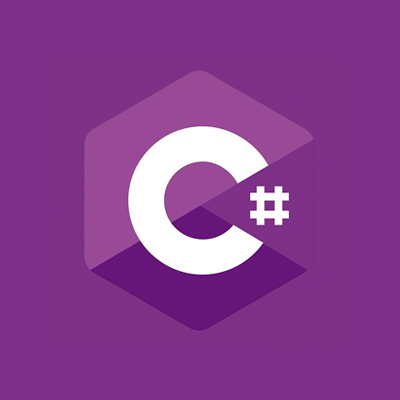

Brandon Lisenby's Marketable Skills
Java
2 Years of use of Java, with skills in Object Oriented Paradigm, implementing Data Structures, and Mobile Development. C#
 2.5 Years experience in C#, skilled in Object Oriented Paradigm.Linux
2 Years experience in Linux, with concentration in shell scripting and cybersecurity. Microsoft Suite
 8 years experience in Microsoft Suite, with 3 years experience working with Access database.
8 years experience in Microsoft Suite, with 3 years experience working with Access database. Research Skills
 Bachelor's degree in Criminal Justice completed in 2020, which required stringent research and writing skills.
Bachelor's degree in Criminal Justice completed in 2020, which required stringent research and writing skills. Oral Communication Skills
3 years experience in work requiring clear concise speech.